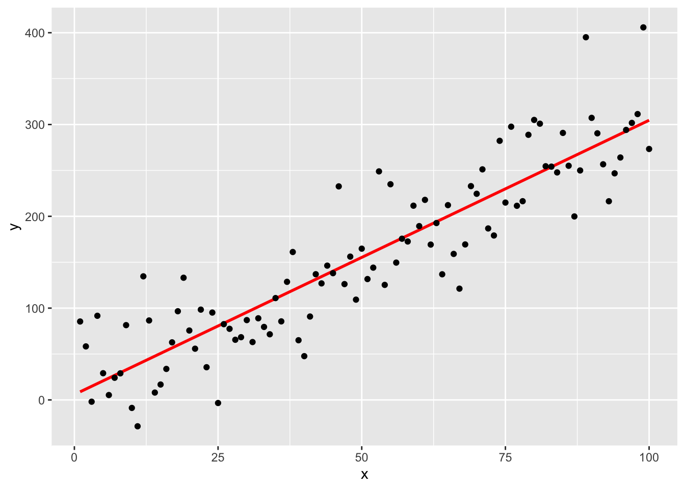
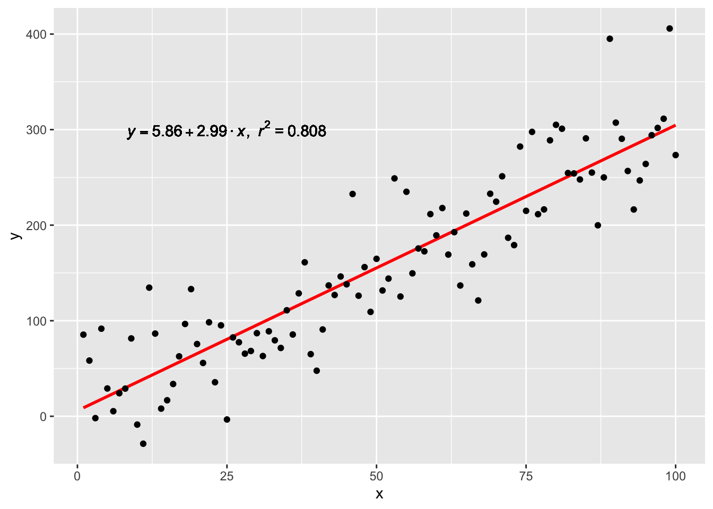

Chapter5 Applications
Some significant applications are demonstrated in this chapter.
5.1 How to insert an image (with visual markdown editor)

[{width="200"}](https://marcelorosales.github.io/Research_Notebook/r-methods-and-how-tos.html#how-to-discharge-git-commits-to-avoid-conflicts-special-circumstances.)5.2 Example two
Hello world!!
5.3 Linear Regression with formula
#Linear regression plot full example
library(ggplot2)
# Dummy data frame
df <- data.frame(x = c(1:100))
df$y <- 2 + 3 * df$x + rnorm(100, sd = 40)
# Linear regression
lm(y ~ x, df)##
## Call:
## lm(formula = y ~ x, data = df)
##
## Coefficients:
## (Intercept) x
## 1.917 3.075fit <- lm(y ~ x, df) # Gives Intercept and the slope only.
summary(fit) #Gives a detail summary or the regression.##
## Call:
## lm(formula = y ~ x, data = df)
##
## Residuals:
## Min 1Q Median 3Q Max
## -96.276 -25.917 2.706 20.328 130.094
##
## Coefficients:
## Estimate Std. Error t value Pr(>|t|)
## (Intercept) 1.9172 8.0461 0.238 0.812
## x 3.0748 0.1383 22.229 <2e-16 ***
## ---
## Signif. codes: 0 '***' 0.001 '**' 0.01 '*' 0.05 '.' 0.1 ' ' 1
##
## Residual standard error: 39.93 on 98 degrees of freedom
## Multiple R-squared: 0.8345, Adjusted R-squared: 0.8328
## F-statistic: 494.1 on 1 and 98 DF, p-value: < 2.2e-16# y = a + b*x. a= Intercept, b = Slope.
# y = mx + b is the same as above where m = slope and b= intercept
p <- ggplot(data = df, aes(x = x, y = y)) +
geom_smooth(method = "lm", se=FALSE, color="red", formula = y ~ x) +
geom_point()
p
# GET EQUATION AND R-SQUARED AS STRING
# SOURCE: https://groups.google.com/forum/#!topic/ggplot2/1TgH-kG5XMA
lm_eqn <- function(df){
m <- lm(y ~ x, df);
eq <- substitute(italic(y) == a + b %.% italic(x)*","~~italic(r)^2~"="~r2,
list(a = format(unname(coef(m)[1]), digits = 3),
b = format(unname(coef(m)[2]), digits = 3),
r2 = format(summary(m)$r.squared, digits = 3)))
as.character(as.expression(eq));
}
p1 <- p + geom_text(x = 25, y = 300, label = lm_eqn(df), parse = TRUE)
p1
p2 <- p + annotate("text", x=23, y = 250, label = lm_eqn(df), color = "black", size = 3, parse=T)
p2